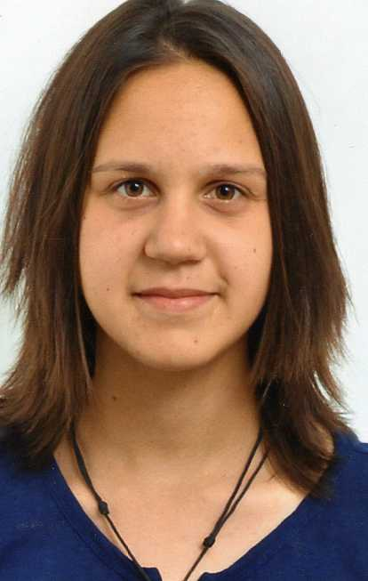

Ime i prezime: Maja Železnjak
Broj indeksa: 41377/12-R
E-mail: mzeleznj2@foi.hr
Slika:

Ja sam Maja Železnjak, rođena 14.05.1993. godine u Čakovcu. Živim u Nedelišću. Studiram informacijske sustave u Varaždinu na Fakultetu organizacije i informatike. Trenutno sa 3. godina. Svoje slobodno vrijeme provodim u prirodi ili igrajući razne sportove poput tenisa, odbojke na pjesku ili dvoranske odbojke.